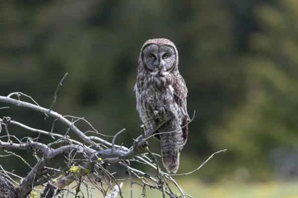

In the vast woodlands of North America, a magnificent creature rules the skies with its silent flight and piercing yellow eyes. The Great Grey Owl is a majestic species known for its impressive size and unique facial disc, resembling a giant pair of feathered headphones.
With a wingspan spanning up to 5 feet, this elusive bird camouflages seamlessly amidst the dense forests it calls home. A fun fact about the Great Grey Owl is that it possesses asymmetrical ear openings, allowing it to pinpoint the precise location of its prey even under a thick layer of snow.
In the majestic woodlands of Minnesota, the Great Grey Owl showcases its nesting prowess. These wise creatures prefer to settle in the heart of old-growth forests, where the towering trees serve as a sturdy foundation for their expansive stick nests.
Carefully constructed on robust branches, these nests provide a secure haven for their growing brood. With meticulous attention to detail, the Great Grey Owl diligently arranges each twig, creating a cozy and well-protected sanctuary amidst the forest’s embrace.
As dusk descends upon the Minnesota wilderness, the Great Grey Owl emerges from its hidden abode, embarking on a nocturnal hunt. With stealth and precision, it traverses the vast expanse of the forest, its keen eyes scanning for movement in the undergrowth.
Primarily an adept hunter of small mammals, this feathered predator takes delight in pursuing the elusive voles and mice that scurry beneath the cover of the forest floor. Yet, in a display of its adaptability, the Great Grey Owl is known to seize larger prey, such as rabbits, when opportunities arise. Its powerful talons and razor-sharp beak are formidable weapons in the pursuit of sustenance.
Minnesota’s Great Grey Owl has faced its share of challenges throughout history. As the encroachment of human development and habitat fragmentation threatened its forested domains, the population of these magnificent birds declined. However, dedicated conservationists and passionate wildlife advocates rallied to protect this iconic species.
Through habitat restoration initiatives and public awareness campaigns, the Great Grey Owl has witnessed a resurgence in its population. Efforts to safeguard its ancient forests and educate communities about the importance of preserving this majestic predator have yielded promising results.
Today, the Great Grey Owl soars through the Minnesota skies, a testament to the power of conservation and the enduring beauty of the Northwoods.